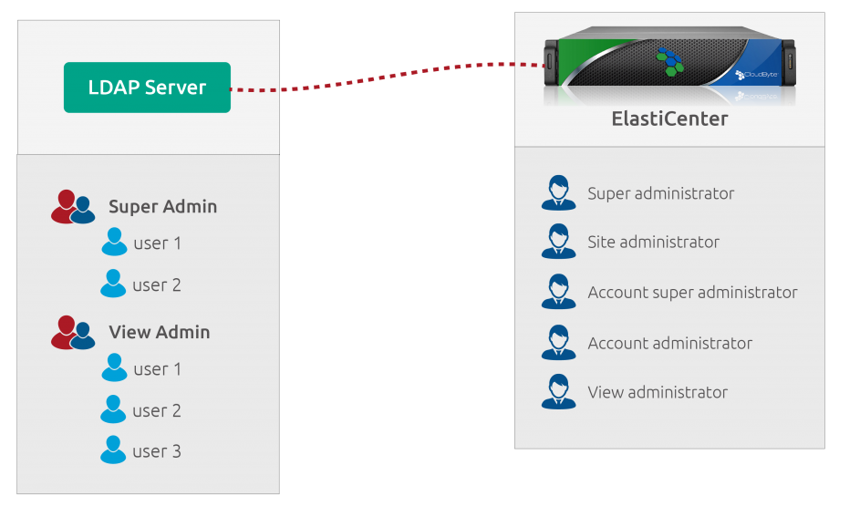
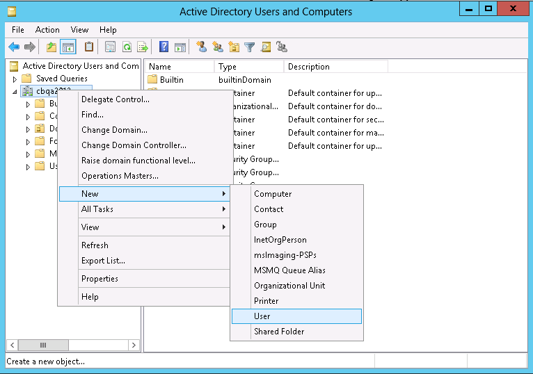
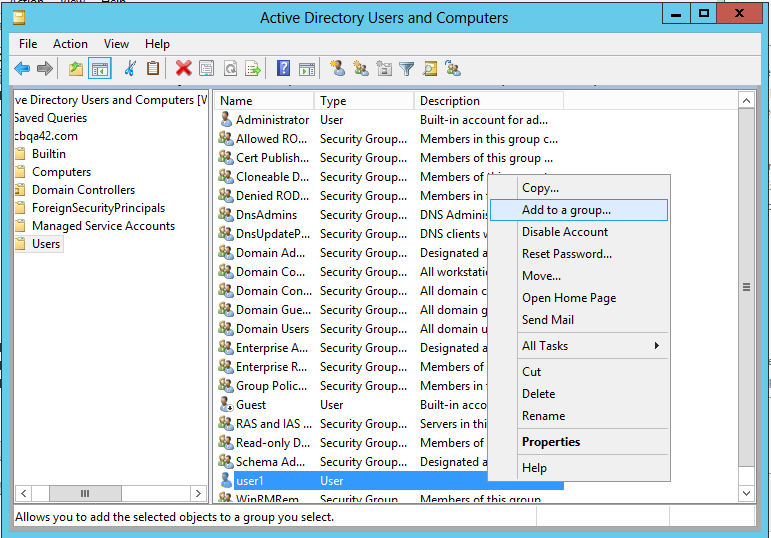
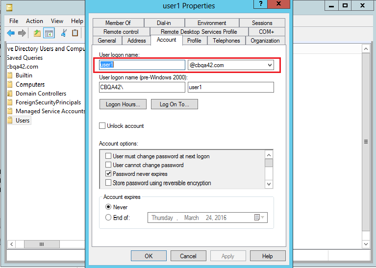

Setting up LDAP authentication for Elastistor
You can use an external LDAP server such as Microsoft Active Directory to authenticate ElastiCenter users.To do this, map the ElastiCenter administrator types with the groups created in the directory service, for example Active Directory Server groups using CloudByte ElastiStor global settings. The following illustration explains how the authentication works:

Setting up LDAP authentication involves procedures on both ElastiCenter and the Active Directory Server
On Active Directory Sever
Create Active Directory user
- On your Active Directory Server, select Server Manager (Start > Administrative Tools).
- In the Server Manager, click Tools.
- In the right pane, click Active Directory Users and Groups.
- In the Active Directory Users and Groups wizard, right-click your Domain name.
- Select New and then select Use
- In the User page, specify the relevant information of the user and then click Next.
- In the following page, specify and confirm password for the user.
- Click Finish.

Create Active Directory Group
Note: Create an individual group for each administrator type in ElastiCenter. For details, see http://www.docs.cloudbyte.com/delegated-administration/
- On your Active Directory Server, select Server Manager (Start > Administrative Tools).
- In the Server Manager, click Tools.
- In the right pane, click Active Directory Users and Groups.
- In the Active Directory Users and Groups wizard, right-click your Domain name.
- Select New and then select Group.
- Specify a name for the group to be created.
- Click OK.
Adding Users to the Groups
- Add users to the group that you want to map with the users in the various administrator type groups in ElastiCenter.
- On your Active Directory Server, select Server Manager (Start > Administrative Tools).
- In the Server Manager, click Tools.
- In the right pane, click Active Directory Users and Groups.
- In the Active Directory Users and Groups wizard, click your Domain name.
- From the list of Groups and users, right-click the User you want to add to the Group.
- Click Add to a Group.
- In the dialog box, specify the name of the Group to which you want to add the user.
- At the prompt, click OK.

On ElastiCenter
- In the Admin Pane of ElastiCenter, click LDAP Configuration.
- In the Actions Icon, click configure LDAP.
- In the Configure LDAP page, specify the configuration details.Click OK
Set Group names for administrators on ElastiCenter
- In the Admin Pane of ElastiCenter, click Global Settings.
- In the Global Settings page, search for LDAP.
- To define the user roles, click Edit and then specify the Group name for the administrators.
- Repeat step 3 for all types of administrators on ElastiCenter.
Log in to ElastiCenter using the LDAP user credentials
Once you have configured LDAP authentication for CloudByte ElastiStor, you must add users to the administrator roles in ElastiStor. For details of administrator types, see http://www.docs.cloudbyte.com/delegated-administration/.
- Launch ElastiCenter using the URL in the following format: https://ElastiCenter_Management_IP_Address.
- Specify the following login credentials of an ADD user: username and password
Note: You can view the login credentials using the User Properties page (User > Properties > Account) as shown in the following screen:

- Re-log in to ElastiCenter as super administrator.
- As a super administrator, map the administrator roles to the newly added users.
- In ElastiCenter, select the Account to which the user belongs to.
- In the Actions icon, select Manage Administrator.
- Select Assign Administrator.
Note: If you want to map the administrator roles for Site-Admin or the View-Admin, follow the procedures in the section Create Site administrators or view administrator